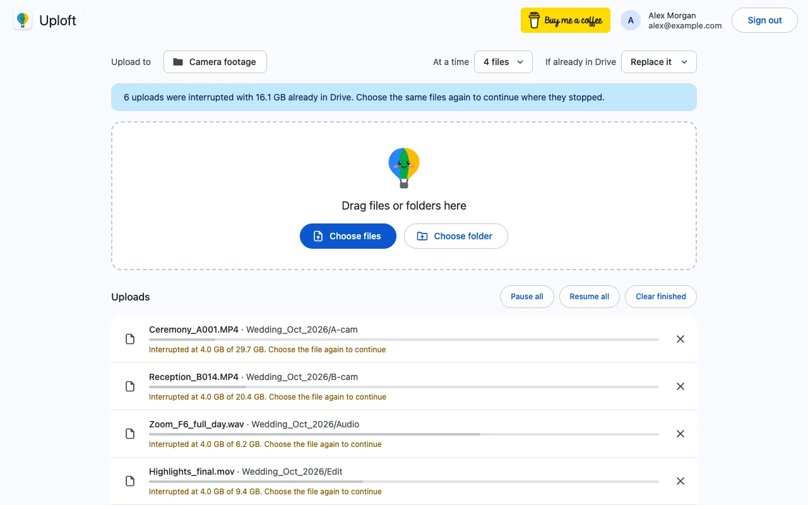

Why does Google Drive say 'file unreadable' when I upload?
Published · Updated · By Sai Nath
The file could not be read from your computer. It was moved, renamed, deleted or changed after you picked it, it is a cloud-only placeholder, or its drive was unplugged. Drive can only send bytes it can read, so put the file back, or choose it again, and upload once more. An interrupted upload then continues where it stopped.
This guide comes from the maker of Uploft, the Chrome extension mentioned below. Google's limits and steps link to Google's own pages and were checked on 29 October 2026; what the extension does comes from its source code.
What does "file unreadable" mean?
It is a local problem, not a Drive account problem. The upload runs in the browser, which reads the file from your disk piece by piece while it sends. If the browser can no longer read the file, the upload cannot go on. Google does not publish a list of the wording Drive uses for this, so the exact message on your screen may differ. The causes below cover the usual cases.
Work through them in order. First check that the file still exists where it was and opens in its own app. Then look at where it lives: a normal folder, a cloud-synced folder or an external drive.
File moved, locked or changed
The most common cause is that the file at the chosen location is no longer the file the browser was given. The browser holds a reference to the file you picked. Chrome's developer documentation says that when a file on disk is modified, the File object "becomes unreadable" and has to be requested again. A file that was moved, renamed or deleted after you picked it is likely to fail the same way, and a file another program is still writing or has locked may fail too.
- Put the file back in its old place, or note its new place.
- Let the program that was saving or exporting it finish and close.
- Do not edit the file during the upload. A big video that is still being exported will change size mid-upload.
- Choose the file again and start the upload again.
Uploft checks this on purpose. It saves each file's name, size and modified time, and when you choose a file again it only continues the interrupted upload if the size and modified time are unchanged. A file that changed since is not glued onto the old partial upload, because the two halves would not make one valid file.
Cloud-only placeholder files
A file that shows in the folder but is kept only in another cloud service has no bytes on your disk until it is downloaded. A browser asked to read such a file can fail or wait a long time, depending on the sync app. Download the file first (most sync apps offer a "keep on this device" or "download now" option), wait until it finishes, then upload it. Copying the file to an ordinary local folder also works.
This depends on the sync app, so check its own help for the menu wording. Google's own app, Drive for desktop, has the same idea: files can be streamed or kept offline, as its help page describes.
Disconnected drive
If the file is on a USB stick, an SD card, an external disk or a network share, the upload fails the moment that volume goes away: a sleeping disk, a loose cable, a Wi-Fi share that dropped. Reconnect it, check that the file opens, and upload again. For big files, copy them to the computer's own disk first so a loose cable cannot interrupt an upload that takes hours.
What happens after a restart?
After Chrome or the computer restarts, the browser has lost its access to your files. Chrome's documentation says that file access granted to a site does not outlast its tabs ("Once a tab is closed, the site loses all access", in its section on write access), and that a permission request can only be triggered by a user gesture such as a click. So a restart is the most common time to meet this message.
In Uploft, the list of uploads and each file's saved place survive a restart. Open the uploader from the toolbar icon ▸ Upload files to Drive and a banner says how many uploads were interrupted and how much is already in Drive.
- If Chrome kept a reference to the files (you used Choose files, Choose folder or drag and drop), press Resume. Chrome asks to read the files again, once for a whole folder.
- If a file could not be reopened, the banner says "N files couldn't be reopened. Drop or choose them again to continue where they stopped", and the row reads "Interrupted at … Choose the file again to continue". Choose the same file again.

File not found
"File not found" has two different meanings, and the fix differs. If it refers to the file on your computer, it is the moved or deleted case above: restore it and choose it again. If it refers to Drive, the saved upload session may be gone. Google says a resumable session address expires after one week, and Drive then answers 404 Not Found. The uploader handles that by starting the file again from the beginning, so choose the file and wait. Uploaders that cannot do that need the whole upload started again.
If the message names a folder, not a file, the destination was deleted or you lost access to it. Choose the destination folder again.
What the extension fixes and what it can't
- It keeps the place. Interrupted uploads are saved with the file's name, size, modified time and a handle to the file, so you do not start from zero.
- It asks for the file again instead of failing silently, with the wording "Choose the file again to continue".
- It refuses a changed file rather than corrupting the upload.
It cannot read a file that is gone, still downloading from a cloud service or on an unplugged drive, and it cannot read a file Chrome has not been allowed to open. It needs Chrome 116 or later on a computer, and it is not on the Chrome Web Store yet.
Uploft is free, and its source code is public. It isn't on the Chrome Web Store yet; the home page shows what it does and what it asks for.
Sources
Checked on 29 October 2026.
- Chrome for Developers: The File System Access API (permissions after a tab closes, changed files).
- Google for Developers: Manage uploads (resumable sessions and their one-week expiry).
- Google Drive Help: Use Google Drive for desktop.
- Uploft: source code (file handles, reopening files, the interrupted banner).